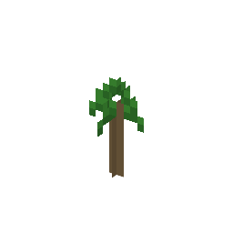

説明
①子ども 植えると、ゴムの木に育つ。
②学生 ゴムの木の葉からとれる。草や土に植えると育つ（骨粉も使える）。
③大人 ゴムの木は植えてから6〜7年たつと、樹液を採れるようになる。
④ガチ ゴムの木の種は油を多く含み、すぐに発芽する力を失う。だから種を遠くへ運ぶのは難しかった。
作り方
（作り方のレシピは無い：拾う・掘る・ほかの方法）
使い道
（このアイテムを使うレシピは無い）

①子ども 植えると、ゴムの木に育つ。
②学生 ゴムの木の葉からとれる。草や土に植えると育つ（骨粉も使える）。
③大人 ゴムの木は植えてから6〜7年たつと、樹液を採れるようになる。
④ガチ ゴムの木の種は油を多く含み、すぐに発芽する力を失う。だから種を遠くへ運ぶのは難しかった。
（作り方のレシピは無い：拾う・掘る・ほかの方法）
（このアイテムを使うレシピは無い）